本章節將帶您完成天文 V2 POS 的安裝與初次設定，認識應用程式的主要介面。
天文 V2 是一個 PWA（Progressive Web App），可以像一般 App 一樣安裝在 iPad 主畫面上。
在 iPad 上打開 Safari，輸入天文 V2 的網址。
點擊 Safari 底部工具列的「分享」圖示（方框加上箭頭的圖示）。
在彈出的選單中，向下滑動找到「加入主畫面」，點擊後確認名稱，再點「新增」。完成後，iPad 主畫面上會出現天文便當的圖示，以後直接點擊即可開啟。
第一次開啟應用程式時，系統會進行資料庫初始化。畫面上會出現初始化動畫，請耐心等待約 3-5 秒。
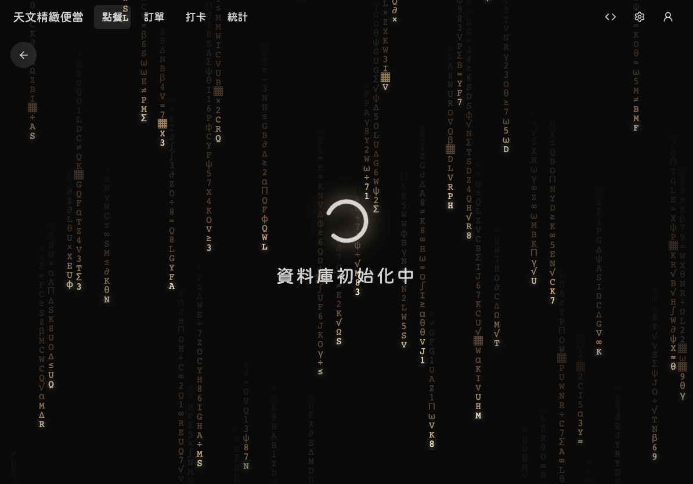
系統正在建立本機資料庫，這個過程只有第一次使用時會出現。
初始化完成後，會自動進入點餐頁面。左側是商品列表區，右側是訂單面板。
這就是您每天最常使用的點餐介面。
畫面頂部的導覽列是切換各功能模組的入口。

| 分頁 | 功能 | 說明 |
|---|---|---|
| 點餐 | 日常點餐下單 | 預設首頁，選商品送出訂單 |
| 打卡 | 員工上下班打卡 | 每天上班、下班時使用 |
| 訂單 | 查看歷史訂單 | 依日期瀏覽所有訂單 |
| 統計 | 營收與績效分析 | 查看銷售數據和圖表 |
| 設定 | 系統管理功能 | 員工管理、商品管理、備份等 |
點擊右上角的使用者圖示，可以看到更多選項。
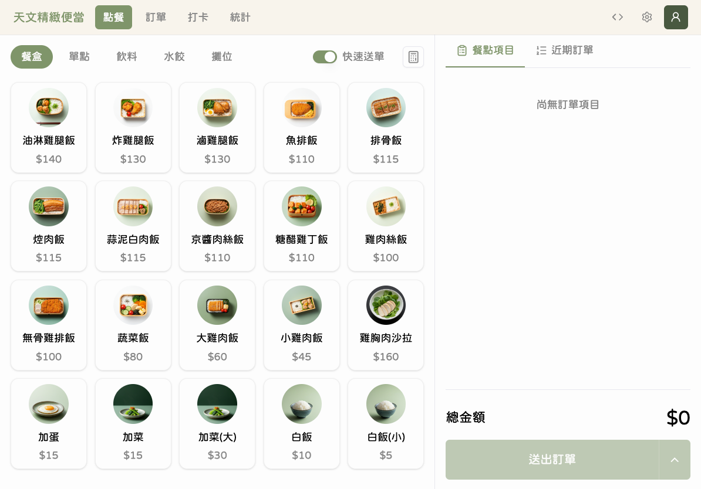
管理員可以在此處使用 Google 帳號登入，解鎖員工管理、商品管理、雲端備份等進階功能。
進入設定頁面後，可以看到五個分頁標籤。
| 分頁 | 說明 | 需要權限 |
|---|---|---|
| 系統資訊 | 查看應用版本、資料庫狀態 | 不需要 |
| 打卡記錄 | 查看出勤歷史 | 不需要 |
| 員工管理 | 新增、編輯、停用員工 | 需管理員登入 |
| 商品管理 | 編輯商品價格、上下架 | 需管理員登入 |
| 雲端備份 | 備份還原、排程設定 | 需管理員登入 |
標示鎖頭圖示的分頁需要管理員權限才能操作。
切換到「打卡」分頁，可以看到所有員工的卡片。
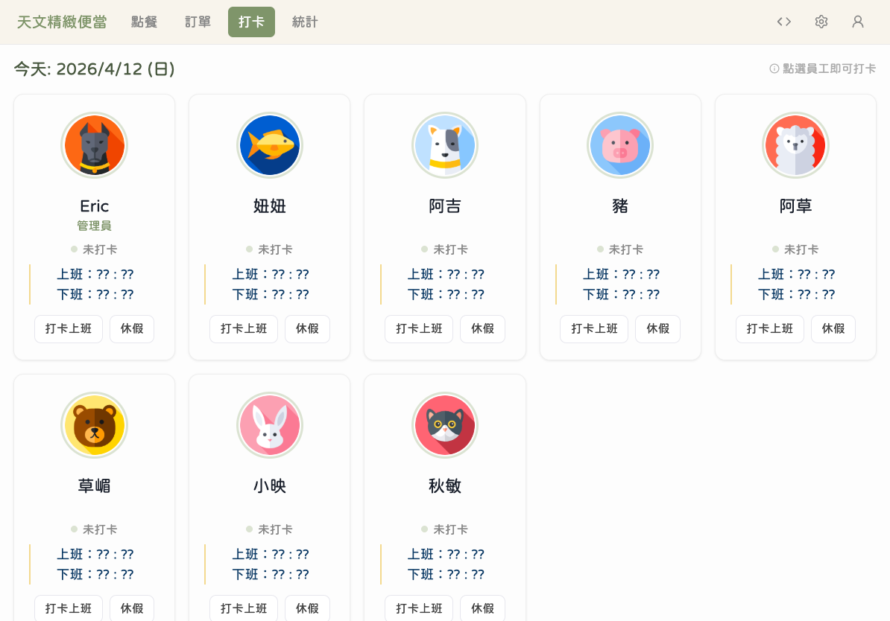
每張卡片顯示員工的名字和目前出勤狀態。預設的員工名單包含：Eric、妞妞、阿吉、豬、阿草、草嵋、小映、秋敏。
Q：安裝後在主畫面找不到圖示？
A：請確認在 Safari 的分享選單中選擇的是「加入主畫面」而非「加入書籤」。
Q：初始化畫面停留超過 30 秒？
A：請關閉應用程式後重新開啟。如果問題持續，請參考疑難排解章節。
Q：畫面顯示「請將裝置轉為直向」？
A：請將 iPad 轉為直式（Home 鍵在下方）使用，本應用不支援橫向操作。
本章節說明從選擇商品到送出訂單的完整流程，以及如何修改已送出的訂單。
點餐頁面分為左右兩個區域：左側（約 65%）是商品列表，右側（約 35%）是訂單面板。

商品列表上方有分類標籤，可以快速切換不同類別的商品。
點擊上方的分類標籤，切換顯示不同類別的商品。
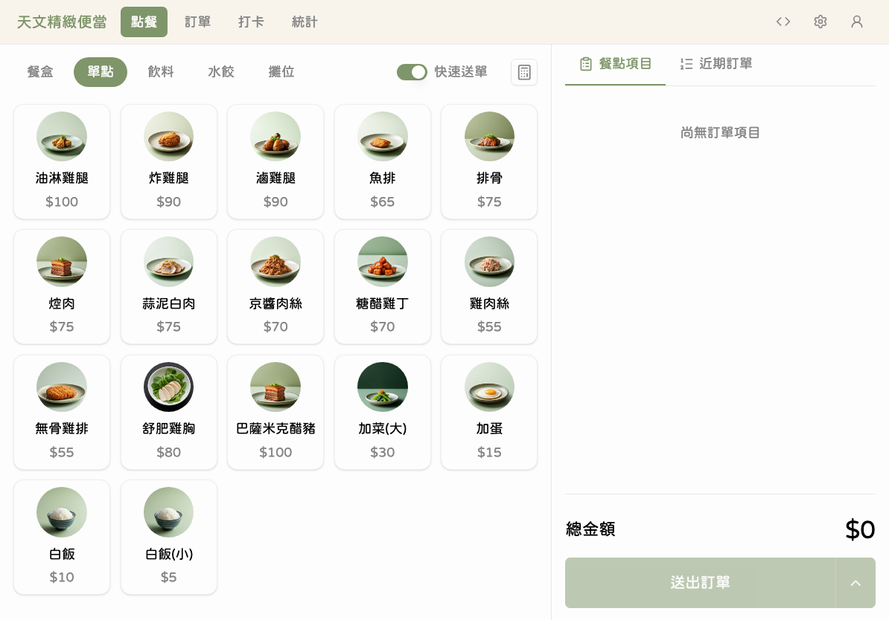
| 分類 | 說明 | 標示顏色 |
|---|---|---|
| 攤位 | 攤位現做品項 | 深藍色 |
| 餐盒 | 各式便當餐盒 | 綠色 |
| 單點 | 單點小菜配料 | 金棕色 |
| 飲料 | 各式冷熱飲品 | 藍色 |
| 水餃 | 各種水餃品項 | 紫色 |
點擊左側商品列表中想要加入的品項卡片。
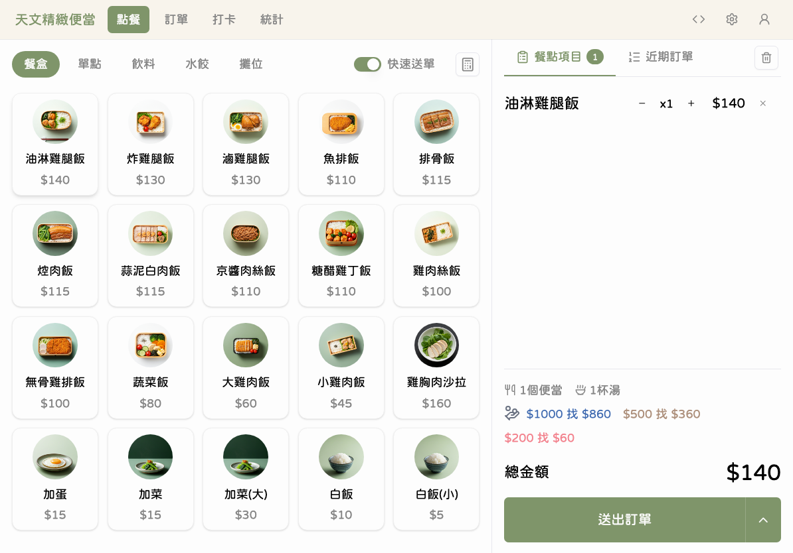
品項會自動以數量 1 加入右側的訂單面板。
如果需要多份，可以在訂單面板中使用 +/- 按鈕調整數量。
將數量減為 0 即可移除該品項。
持續點選商品，所有品項會依序列在訂單面板中，並即時計算小計與總金額。
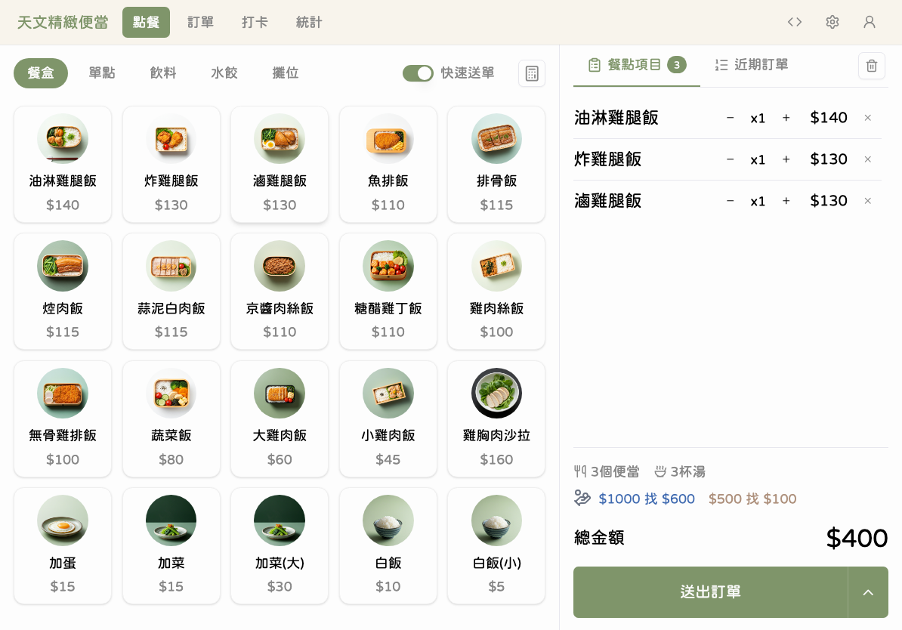
訂單面板會顯示每個品項的名稱、數量和金額，底部顯示總計。
如果客人有特殊要求，可以為品項加上備註標籤。
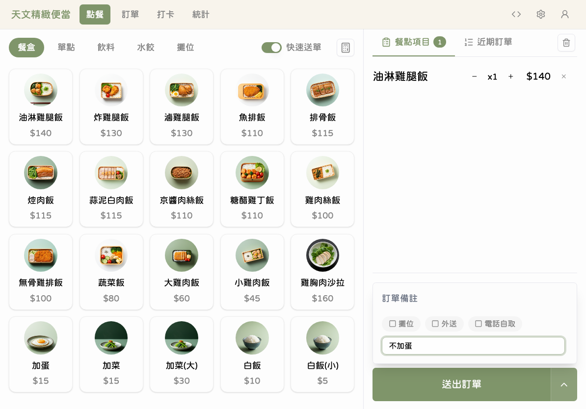
可以選擇預設的備註標籤，或手動輸入自訂備註。含有「攤位」分類品項的訂單會自動加上「攤位」備註標記。
需要輸入自訂金額時，可以使用計算機功能。
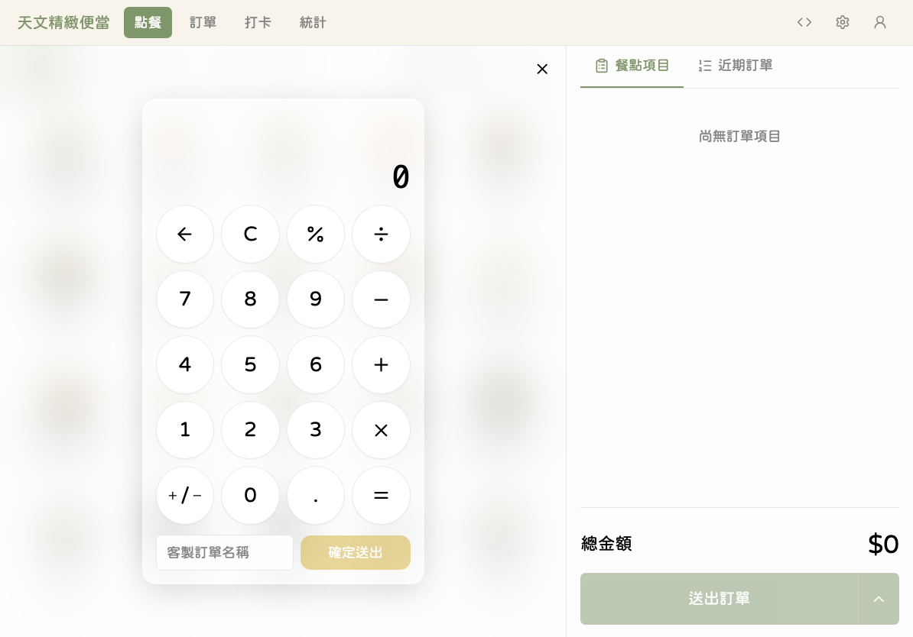
在計算機介面中輸入品項名稱和金額。
確認輸入的品項和金額無誤後，加入訂單。
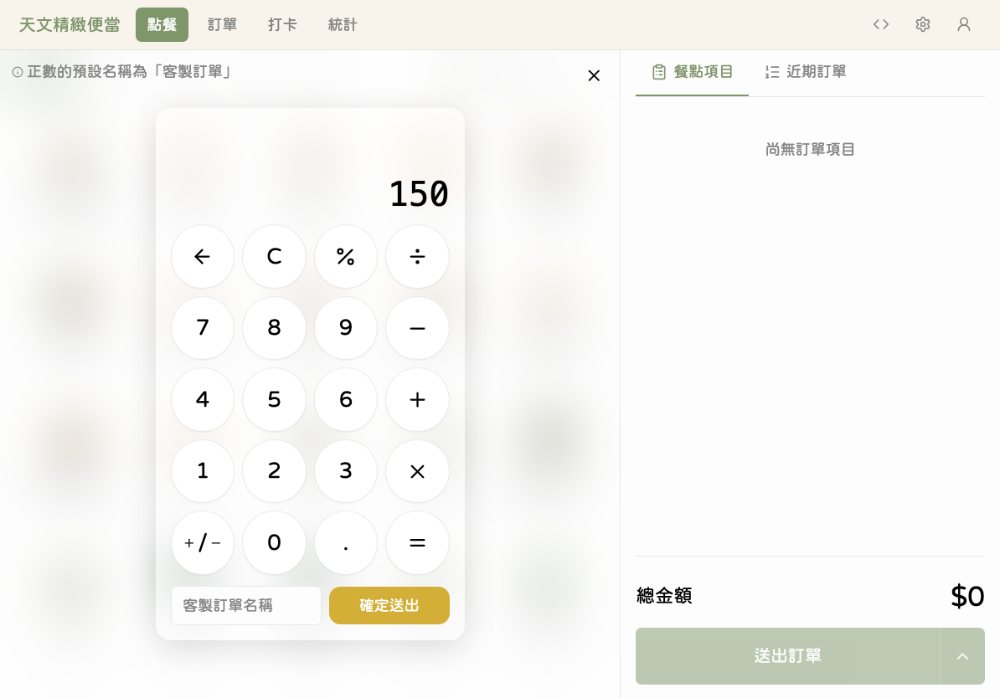
自訂品項會和其他商品一起顯示在訂單面板中。
在訂單面板的折扣區域，可以選擇或輸入折扣。
折扣金額會從總金額中扣除，畫面上會清楚顯示原價、折扣金額和折後總價。
確認所有品項和折扣都正確後，檢查畫面底部的總金額。

確認無誤後，點擊「送出訂單」按鈕。
系統預設使用快速模式，點擊「送出訂單」後會直接送出，不會跳出確認視窗。
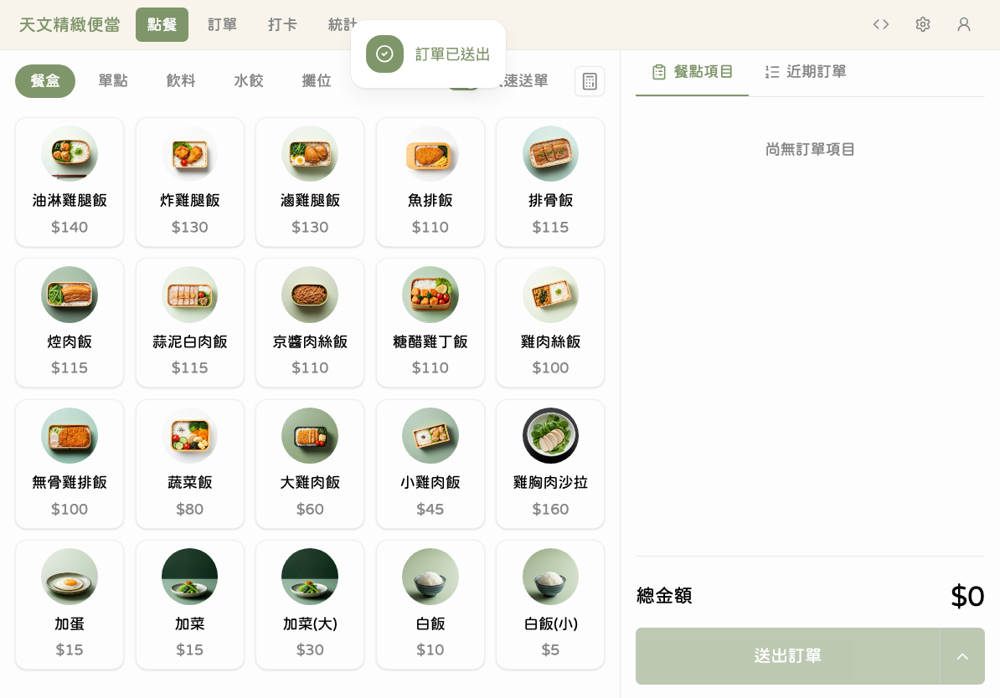
快速模式 vs 標準模式
| 模式 | 行為 | 適合 |
|---|---|---|
| 快速模式（預設） | 點擊送出後直接完成，不跳確認視窗 | 熟練的操作人員，加快出單速度 |
| 標準模式 | 點擊送出後先顯示訂單摘要確認視窗，再點確認才送出 | 新手操作人員，避免送錯單 |
模式切換可在右側訂單面板的設定中調整。
訂單送出成功後，可以在右側面板切換到「近期訂單」分頁，查看剛剛送出的訂單。
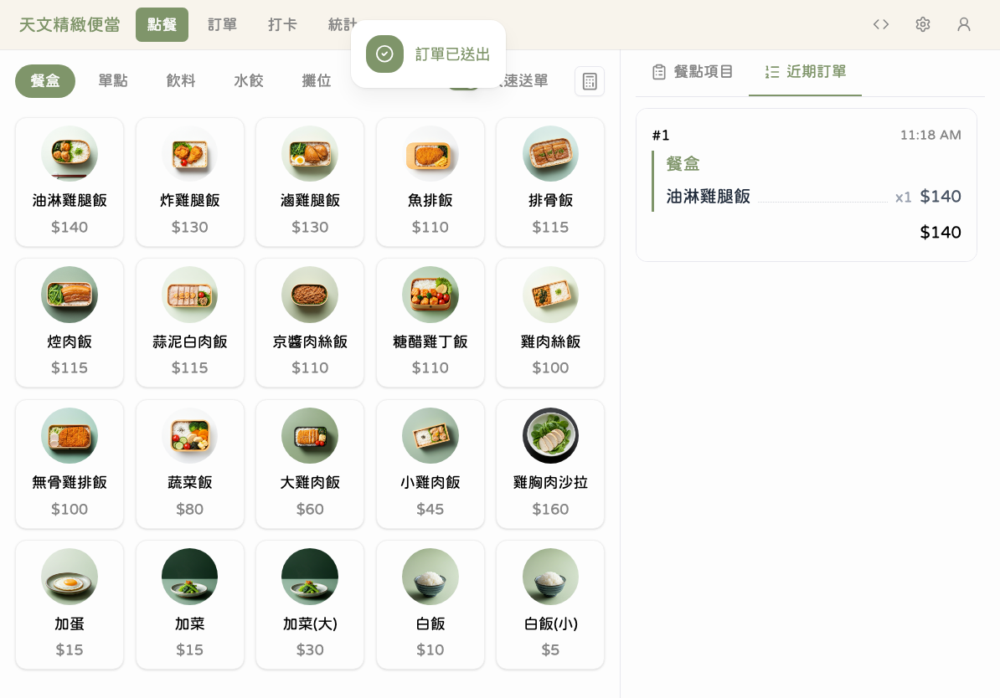
近期訂單列表會顯示今天所有已送出的訂單，包含訂單編號、品項摘要和金額。
如果發現訂單有誤，在近期訂單列表中可以編輯訂單。

在訂單項目上向左滑動，會出現編輯和刪除的操作按鈕。點擊「編輯」即可修改品項數量或刪除品項。
當餐點已送達客人手中，可以將訂單標記為「已送餐」。
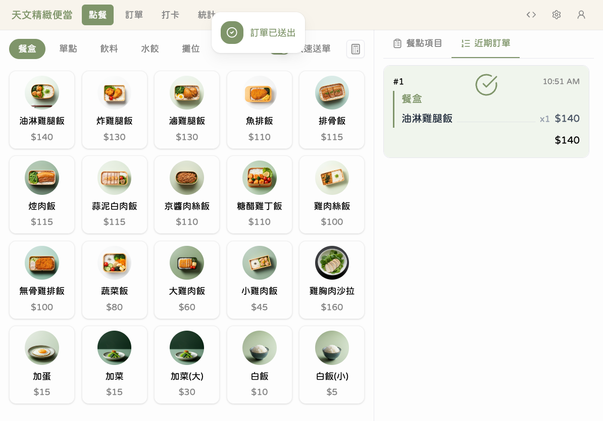
標記後訂單會顯示已送餐的狀態標記，方便追蹤出餐進度。
| 狀況 | 處理方式 |
|---|---|
| 送錯訂單 | 在近期訂單中找到該筆訂單，左滑點「編輯」進行修改 |
| 加錯品項 | 在購物車中將該品項數量減為 0，或直接刪除 |
| 數量不對 | 在購物車中用 +/- 按鈕調整正確數量 |
| 價格不對 | 已送出的訂單價格無法更改（快照定價機制）。如需修改商品價格，請管理員到「商品管理」調整，但修改後只影響新的訂單 |
| 忘了打折 | 編輯已送出的訂單，重新加入折扣 |
Q：商品列表是空的？
A：請確認是否選擇了正確的分類標籤。如果所有分類都沒有商品，請聯繫管理員確認商品是否已上架。
Q：送出訂單後想取消？
A：目前沒有取消訂單的功能，但可以透過「編輯」移除所有品項。
Q：折扣按鈕在哪裡？
A：折扣區域在訂單面板的小計金額下方。向下滑動即可看到。
本章節說明員工如何使用打卡功能記錄上下班時間，以及如何申請休假和查看出勤記錄。
點擊導覽列上的「打卡」分頁，進入打卡頁面。

頁面上會顯示所有員工的卡片，每張卡片上有員工的名字和目前的出勤狀態。
找到自己的員工卡片，點擊該卡片。

系統會跳出確認視窗，顯示您的名字和目前時間，並提供「打卡上班」、「休假」和「取消」三個按鈕。
點擊「打卡上班」按鈕完成打卡。
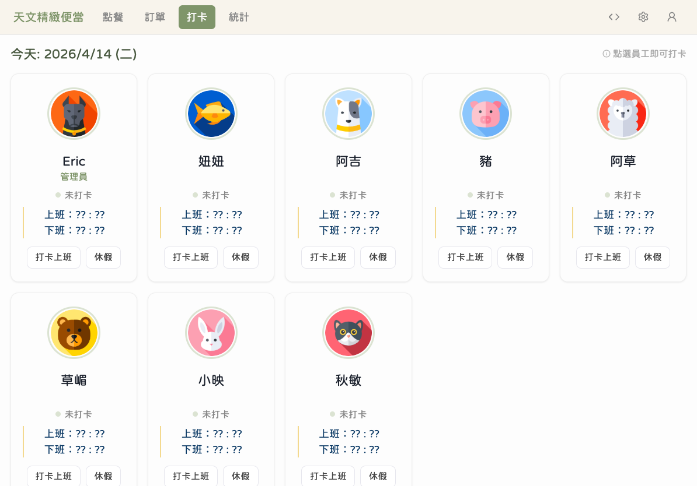
系統會記錄您的上班時間。
打卡成功後，您的員工卡片狀態會更新為「正在上班」，並顯示打卡時間。
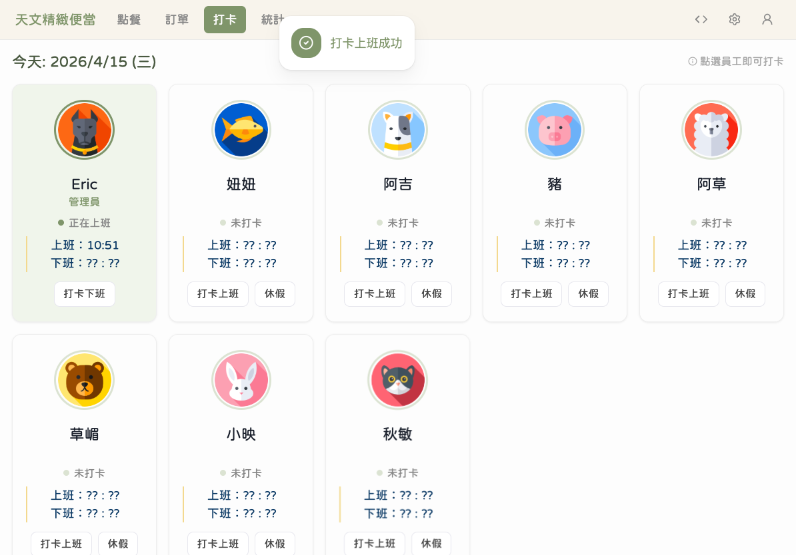
卡片上的狀態指示會從「未打卡」變成「正在上班」，方便所有人確認。
下班時，再次點擊自己的員工卡片。
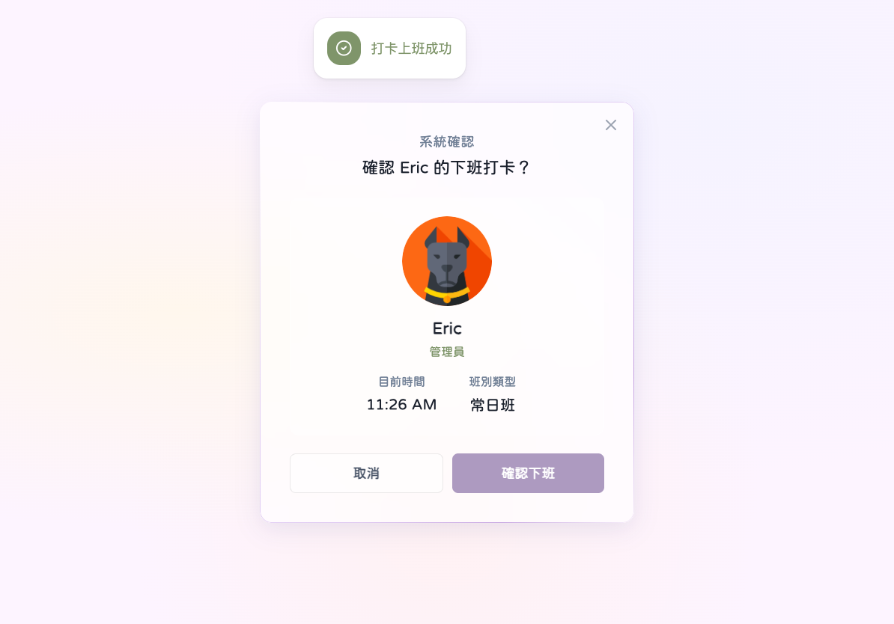
確認視窗會顯示「打卡下班」按鈕和已上班的時數。點擊「打卡下班」完成下班打卡。系統會自動計算您今天的工作時數。
如果今天要休假，在打卡確認視窗中點擊「休假」按鈕。
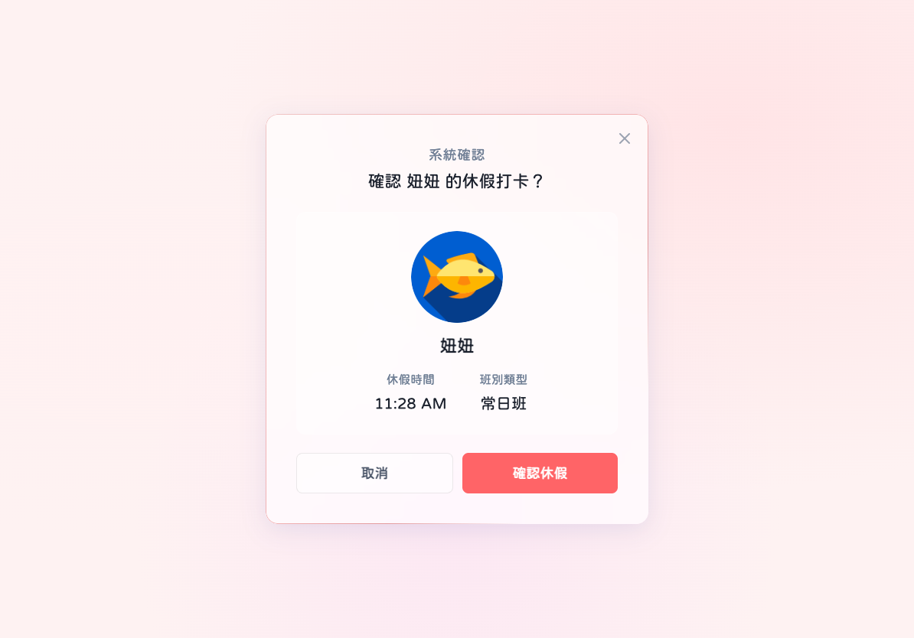
系統會記錄當天為休假狀態。如果需要取消休假，再次點擊自己的卡片，選擇「取消休假」即可。
在「設定」分頁中，切換到「打卡記錄」標籤頁，可以查看所有員工的出勤記錄。
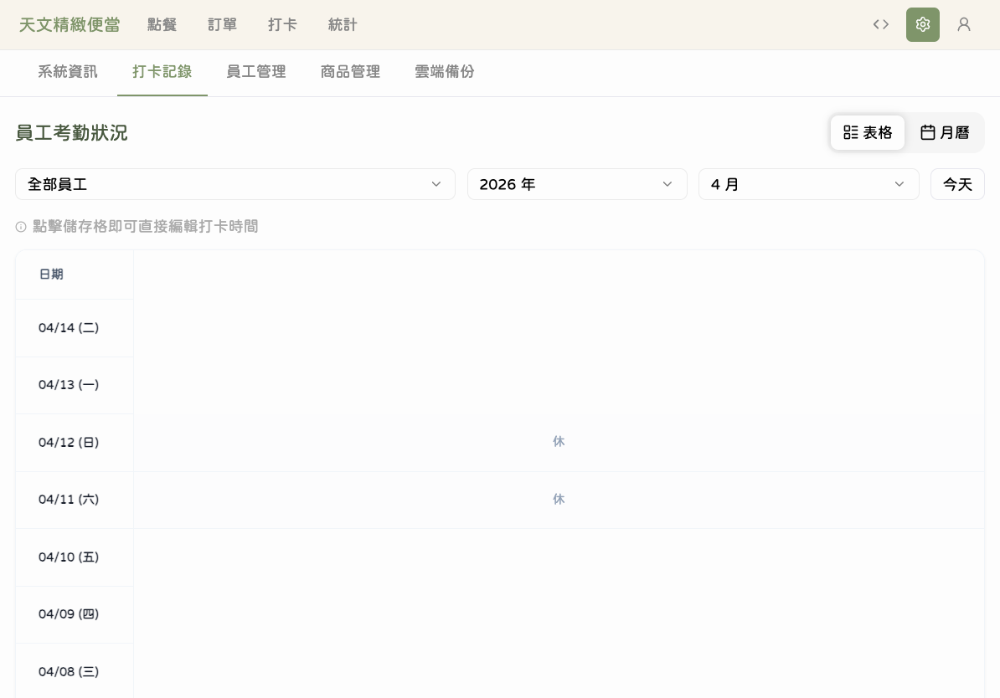
頁面會按日期列出打卡記錄，包含上班時間、下班時間和工時。可以使用日期導航按鈕切換不同日期或週期。
點擊特定日期的記錄，可以展開查看該員工的詳細出勤資訊。
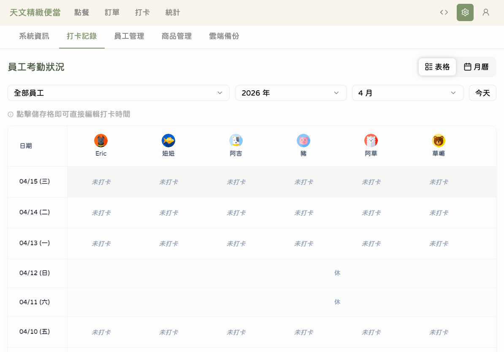
詳細資訊包含：員工姓名、班別、打卡上班時間、打卡下班時間、總工時。
Q：忘記打卡上班怎麼辦？
A：請告知管理員。目前系統沒有補卡功能，但管理員可以在記錄中做備註說明。建議養成到店就打卡的習慣。
Q：打卡後發現打錯人了？
A：打卡記錄目前無法刪除或修改，請告知管理員做記錄。
Q：休假申請送出後可以取消嗎？
A：可以，再次點擊自己的卡片，選擇「取消休假」即可。
Q：「缺勤」狀態是什麼意思？
A：如果當天既沒有打卡也沒有申請休假，系統會自動記錄為「缺勤」狀態。
Q：打卡記錄在哪裡看？
A：進入「設定」→「打卡記錄」分頁即可查看。
本章節說明需要管理員權限的進階功能，包含員工管理、商品管理和營收統計。
本章節的所有操作都需要先使用 Google 帳號登入。
要使用員工管理、商品管理或雲端備份功能，需要先以管理員身份登入。
點擊導覽列右上角的使用者圖示，選擇「使用 Google 帳號登入」。登入成功後，受保護的分頁上的鎖頭圖示會消失，代表已經可以操作。
進入「設定」分頁，預設顯示的就是「系統資訊」頁面。
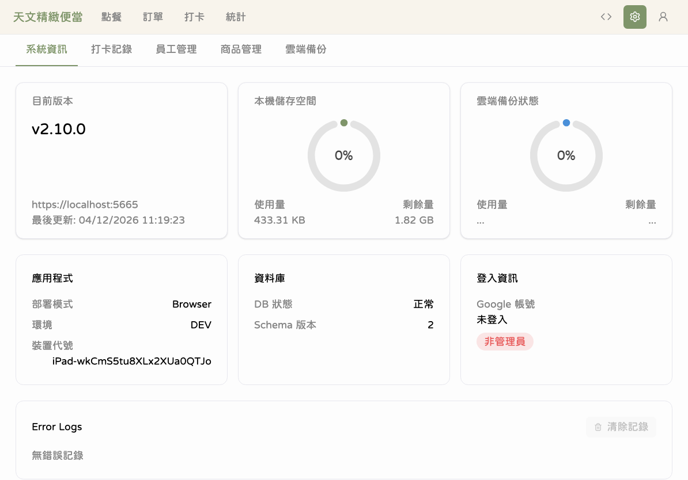
| 項目 | 說明 |
|---|---|
| 應用程式版本 | 目前安裝的版本號碼 |
| 資料庫大小 | 本機 SQLite 資料庫的檔案大小 |
| 最後備份時間 | 上次成功備份的時間 |
| 裝置代號 | 此台 iPad 的識別名稱 |
點擊「員工管理」分頁標籤，進入員工管理頁面。

頁面顯示所有員工的清單，每位員工會顯示頭像、姓名、員工編號、班別和目前狀態（上班/離職）。
點擊頁面上方的「新增員工」按鈕。
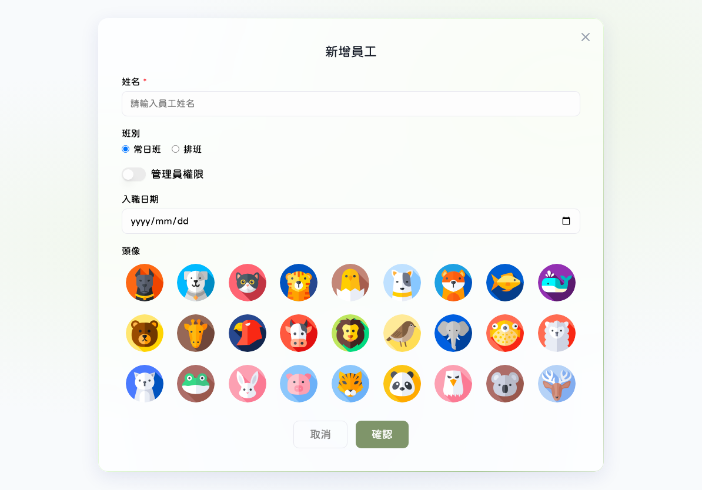
填寫表單中的必要資訊：
填寫完成後點擊「儲存」。
在員工列表中，點擊要修改的員工旁邊的編輯圖示。

表單會自動帶入該員工的現有資料，修改需要的欄位後點擊「儲存」。
如果員工離職，可以將帳號設為「離職」狀態。

系統使用軟刪除機制，停用後該員工不會出現在打卡頁面，但歷史記錄會保留。如有需要可以重新啟用。
如果需要讓員工以管理員身份登入，點擊員工資料中的「連結 Google 帳號」按鈕。
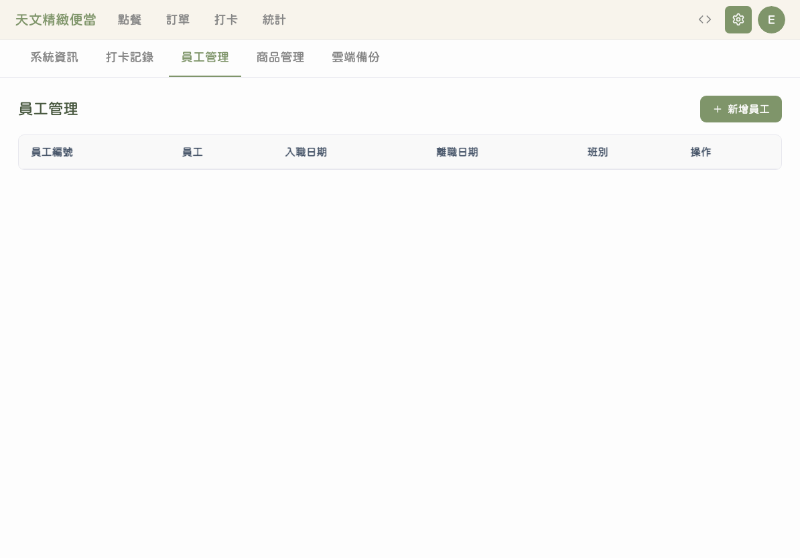
連結後，該員工可以使用自己的 Google 帳號登入管理功能。
點擊「商品管理」分頁標籤。
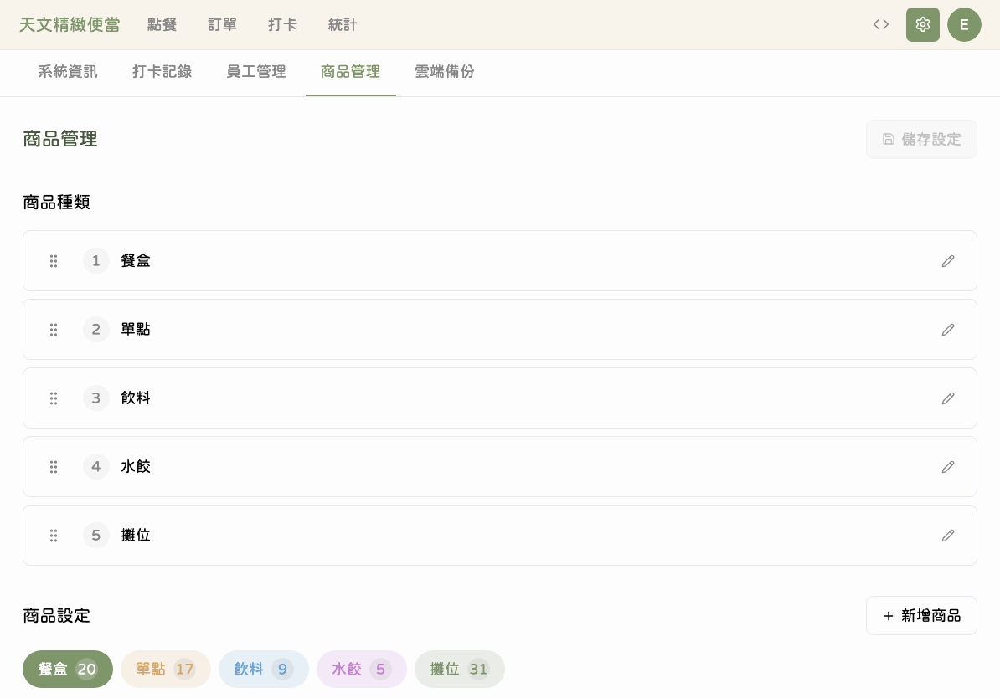
商品按照分類（攤位、餐盒、單點、飲料、水餃）分組顯示。每個商品卡片上有名稱、售價和操作按鈕。
點擊商品卡片上的編輯圖示，開啟編輯表單。

可以修改商品的名稱和售價。修改完成後點擊「儲存」。
每次修改商品價格，系統都會自動留下記錄。
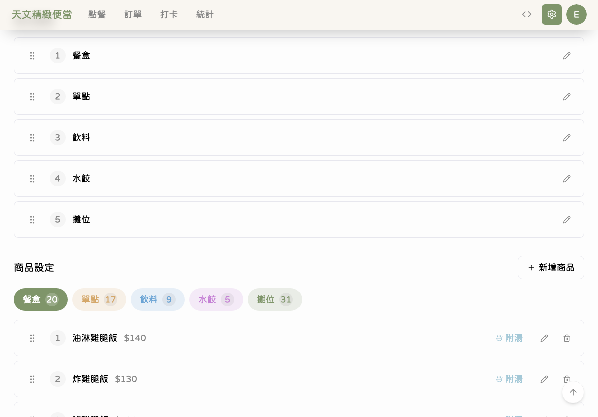
價格變更記錄包含：商品名稱、修改前價格、修改後價格、修改者和修改時間。
修改商品價格只會影響之後的新訂單。已經送出的訂單金額不會改變，因為系統使用「快照定價」機制 — 訂單送出時的價格就會被鎖定。
點擊導覽列的「統計」分頁，進入營收統計頁面。

統計頁面上方顯示關鍵指標（KPI），包含總營收、日平均營收、上午營收和下午營收。
使用日期範圍選擇器，可以查看特定期間的統計資料。
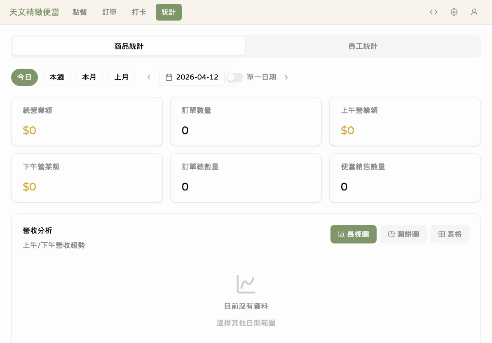
可以選擇「今天」、「本週」、「本月」或自訂日期範圍。
頁面下方提供多種圖表，協助您了解銷售趨勢。
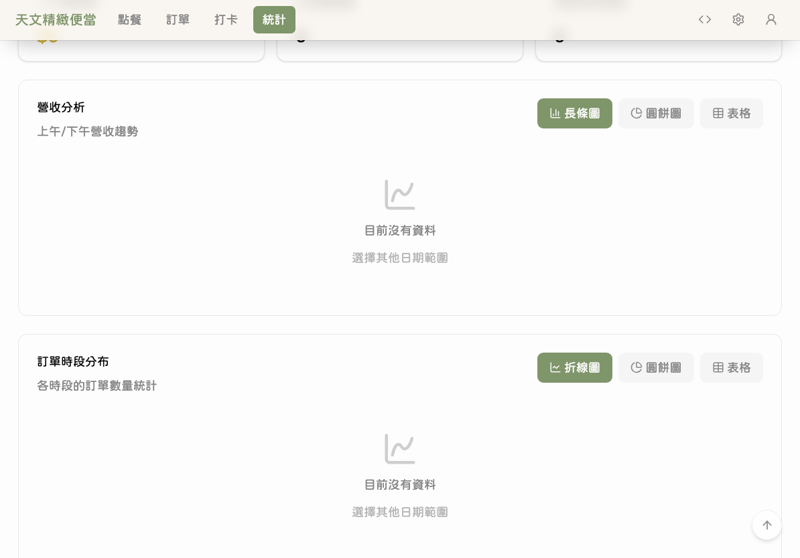
| 圖表 | 內容 |
|---|---|
| 營收趨勢 | 按日期顯示每天的營收變化 |
| 商品銷售排名 | 顯示銷售數量前幾名的商品 |
| 分類銷售分布 | 各分類的營收佔比 |
| 員工績效 | 每位員工的訂單數和接單金額 |
Q：忘記管理員密碼？
A：管理員使用 Google 帳號登入，不需要記密碼。如果 Google 帳號有問題，請洽 Google 帳號支援。
Q：可以刪除商品嗎？
A：商品無法直接刪除，以確保歷史訂單中的資料完整保留。如需調整商品，請修改商品名稱或售價。
Q：統計數據和實際金額不一致？
A：請確認日期範圍是否正確，以及是否有編輯過訂單。如果問題持續，請嘗試重新整理頁面。
Q：商品改價後舊訂單也跟著變了？
A：不會。天文 V2 使用快照定價機制，每筆訂單在送出時就鎖定了當時的價格，之後的價格修改不會影響已送出的訂單。
本章節說明如何使用雲端備份功能保護您的資料，包含自動備份排程、手動備份、還原和 V1 資料匯入。
本章節的所有操作都需要先使用 Google 帳號登入管理員身份。
進入「設定」→「雲端備份」分頁，查看目前的備份狀態。

| 項目 | 說明 |
|---|---|
| 最後備份時間 | 上次成功備份的日期和時間 |
| 雲端資料大小 | 備份檔案在雲端佔用的空間 |
| 備份狀態 | 上次備份是否成功 |
| 下次自動備份 | 預計的下一次自動備份時間 |
在備份設定區域，可以選擇自動備份的頻率。
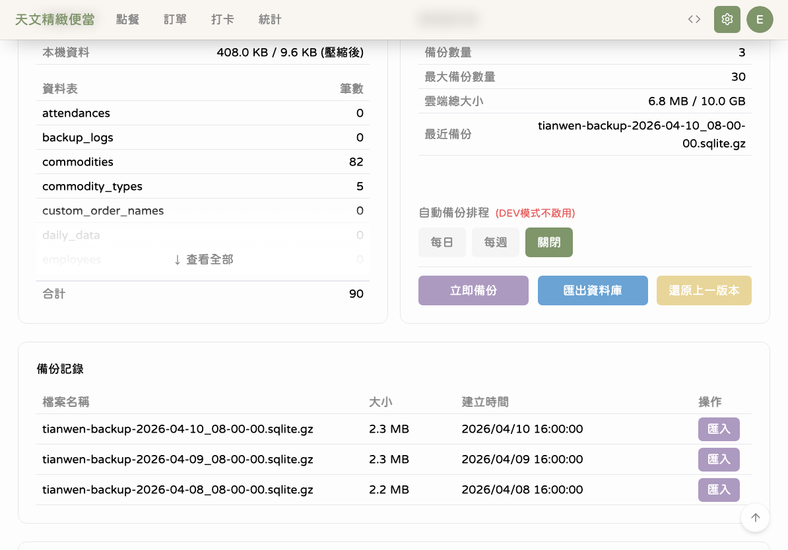
| 選項 | 說明 |
|---|---|
| 不備份 | 關閉自動備份（不建議） |
| 每日備份 | 每天凌晨自動備份一次 |
| 每週備份 | 每週一自動備份一次 |
建議選擇「每日備份」，確保資料安全。自動備份會在每天凌晨（台灣時間）自動執行，不需要手動操作。
如果需要立即備份，點擊「立即備份」按鈕。
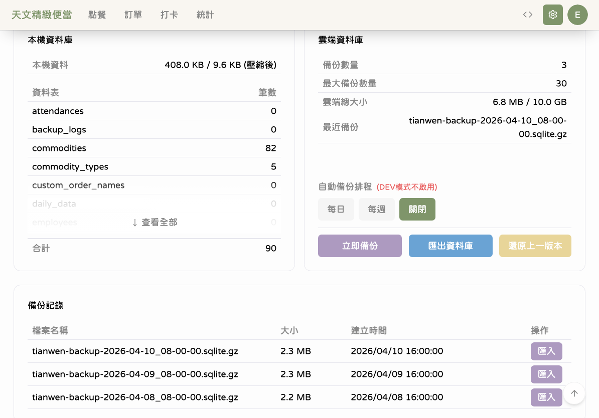
點擊後系統會開始壓縮並上傳資料庫。

備份過程通常需要 10-30 秒，取決於資料量大小。完成後會顯示成功訊息，備份狀態也會更新。
向下滑動可以看到過去的備份歷史記錄。
每筆記錄顯示：備份時間、備份類型（手動/自動）、狀態（成功/失敗）和檔案大小。系統最多保留 30 筆備份記錄。
如果需要還原資料，點擊「從雲端復原」按鈕，選擇想要還原的備份版本。
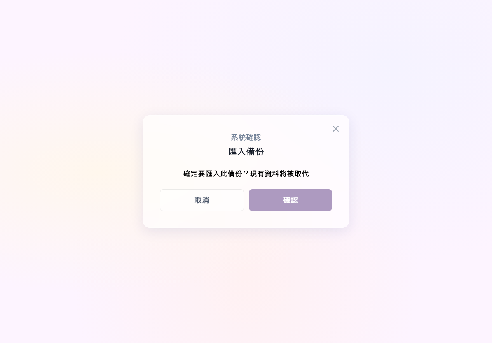
系統會列出雲端上的所有備份檔案，按時間排序。選擇一個備份版本後，點擊「復原」。
系統會下載並解壓縮備份檔案，然後取代目前的本機資料庫。
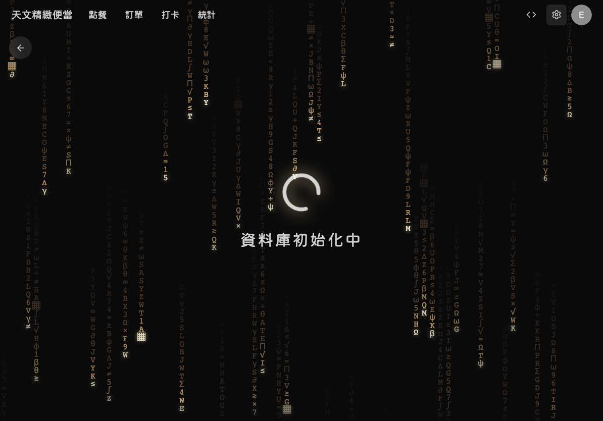
還原過程中請不要關閉應用程式或切換頁面。完成後系統會自動重新載入。
還原操作會覆蓋目前本機的所有資料，請確認這是您想要的操作。
在雲端備份頁面中，可以查看本機資料庫的詳細資訊。
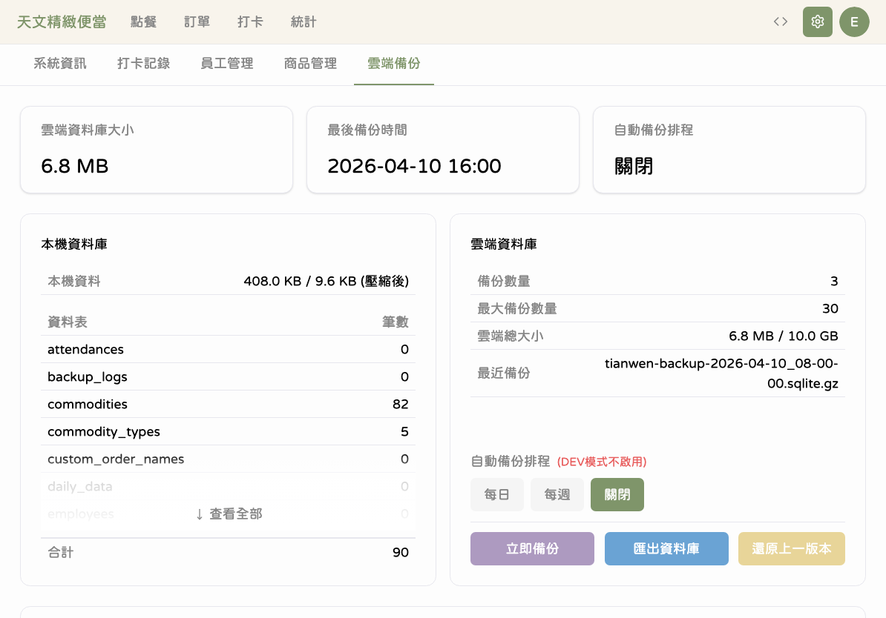
顯示內容包含本機資料庫的大小（原始和壓縮後），以及上一版本資料庫的資訊。
點擊「查看全部」可以展開完整的資料表列表，查看每個表格的資料筆數。
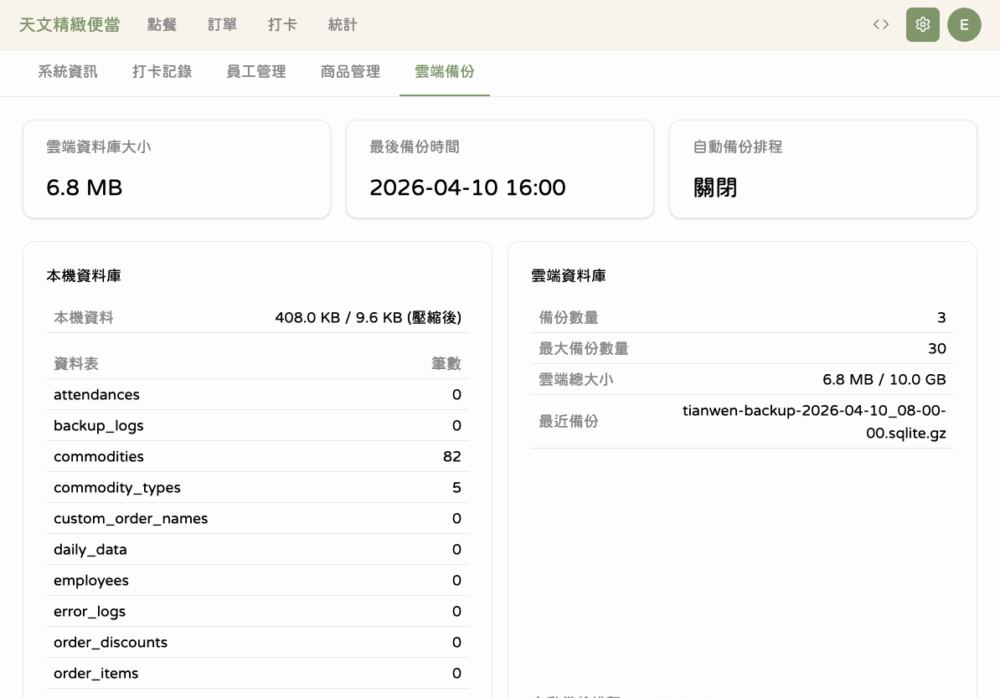
這可以幫助您了解目前系統中有多少訂單、員工、商品等資料。
系統會保留上一次備份還原前的資料庫副本。如果確認不需要，可以刪除以釋放空間。

點擊刪除按鈕後，系統會顯示確認提示。確認後即會永久刪除。
如果發現還原後的資料不正確，可以回復到上一版本。

點擊「還原上一版本」按鈕，系統會將資料庫回復到還原操作之前的狀態。
如果之前使用的是天文 V1，可以匯入舊版的訂單、商品和員工資料。
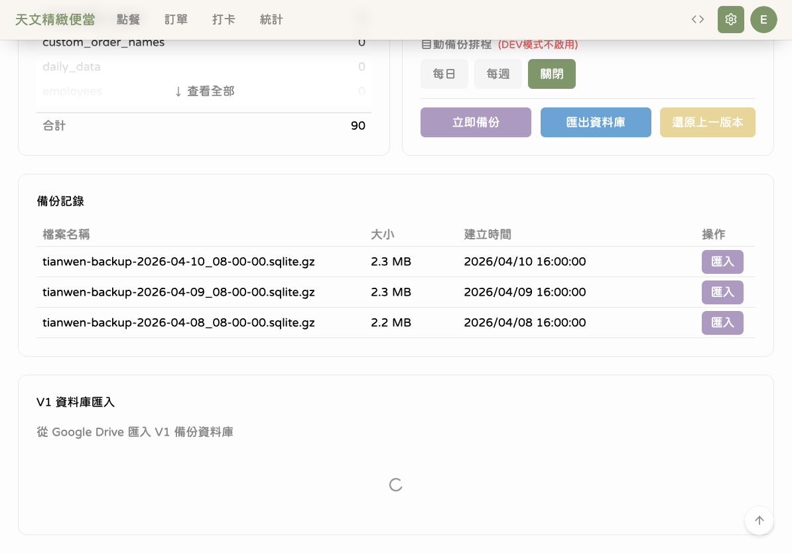
點擊「匯入 V1 資料」按鈕，選擇 V1 資料庫檔案後開始匯入。匯入過程會顯示進度，完成後會列出匯入的資料筆數。
匯入採用防重複機制，相同的資料不會被重複匯入。
tianwen-{裝置代號}-{日期時間}.sqlite.gzQ：備份失敗怎麼辦？
A：請先檢查 iPad 的網路連線是否正常。確認網路沒問題後，重新嘗試手動備份。如果持續失敗，請參考疑難排解章節。
Q：還原後資料正確嗎？
A：還原會完整復原所選備份時間點的所有資料，包含訂單、員工、商品和設定。還原後建議檢查幾筆訂單和員工資料確認無誤。
Q：自動備份是什麼時候執行的？
A：自動備份在每天凌晨（台灣時間 UTC+8）執行。另外，每次開啟應用程式時，系統也會檢查是否需要備份，如果已逾期則會自動補備份。
Q：可以在不同 iPad 之間同步資料嗎？
A：可以。在一台 iPad 上備份後，在另一台上使用「從雲端復原」選擇該備份檔案即可。但請注意，這會覆蓋目標 iPad 上的現有資料。
Q：備份空間有限制嗎？
A：系統最多保留 30 筆備份記錄。超過時會自動刪除最舊的備份。
本章節列出使用過程中可能遇到的問題和解決方法。如果遇到下列畫面，請依照對應的處理步驟操作。
如果看到帶有動畫效果的錯誤畫面（Event Horizon 動畫），代表系統發生了非預期的錯誤。

如果看到「找不到頁面」的提示，代表您嘗試訪問的網址不存在。
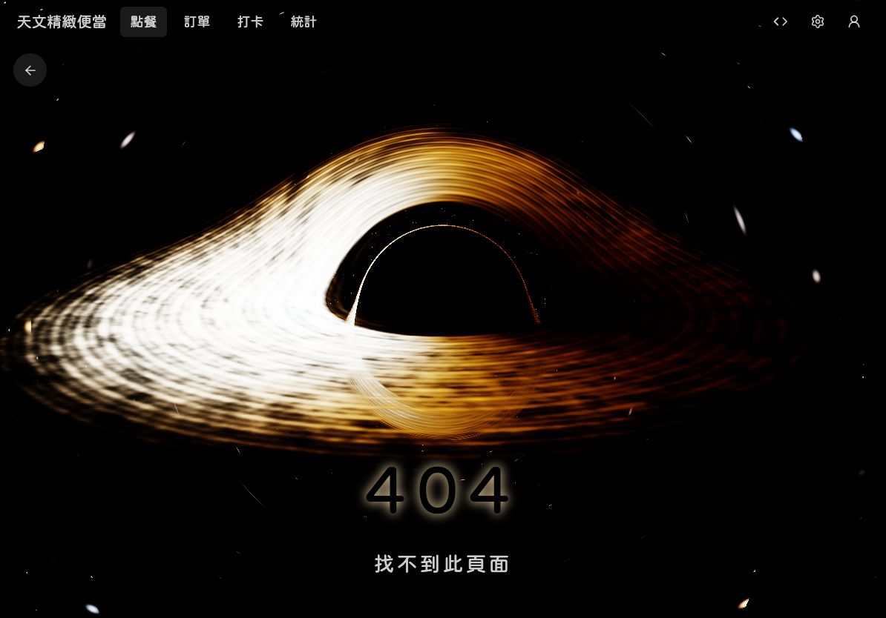
開啟應用程式時，初始化畫面通常只會顯示 3-5 秒。如果超過 30 秒仍停留在載入畫面，可能是系統初始化遇到問題。
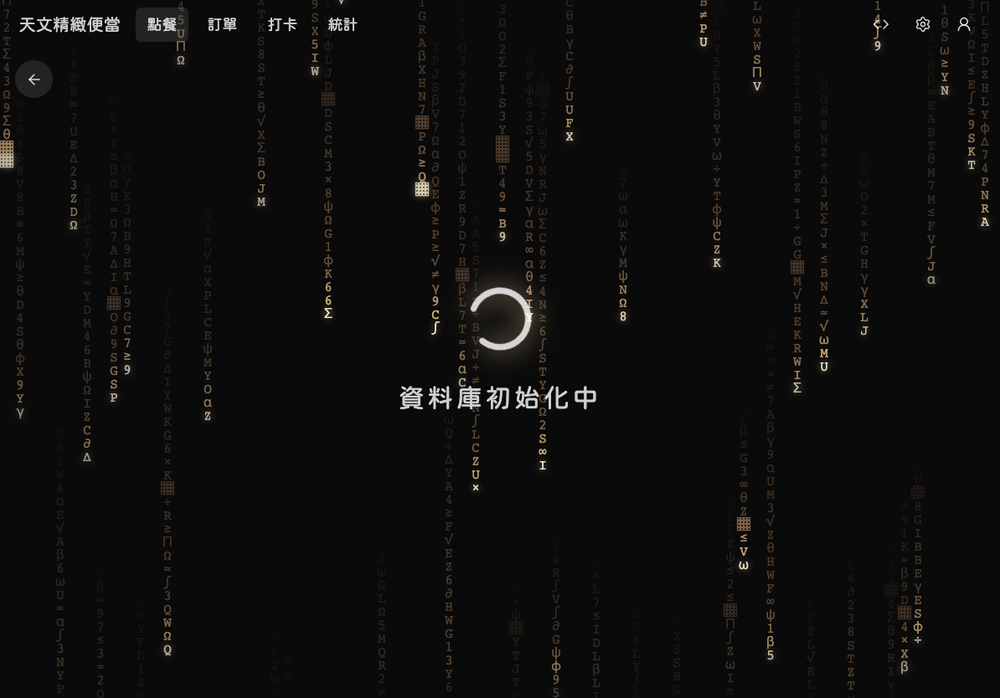
當系統有新版本可用時，畫面上會出現更新通知。
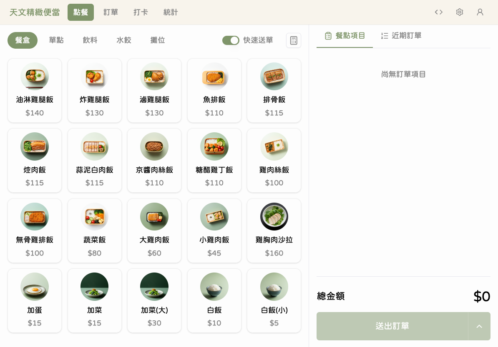
建議盡快更新，新版本通常包含功能改善和問題修正。
執行備份時如果出現錯誤訊息，通常是網路連線問題。
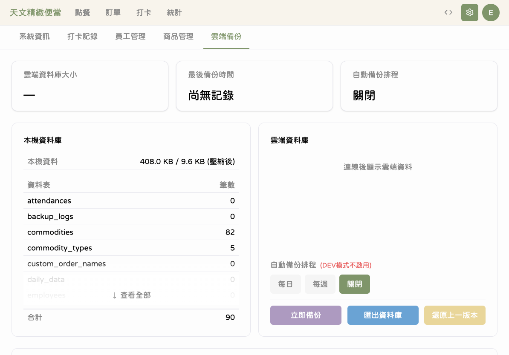
您的資料安全嗎？ 備份失敗不會影響本機資料，所有訂單和記錄都安全保存在 iPad 上。只是這些資料尚未上傳到雲端。
當 iPad 被轉為橫向（橫式）時，畫面會出現提示要求轉回直向。
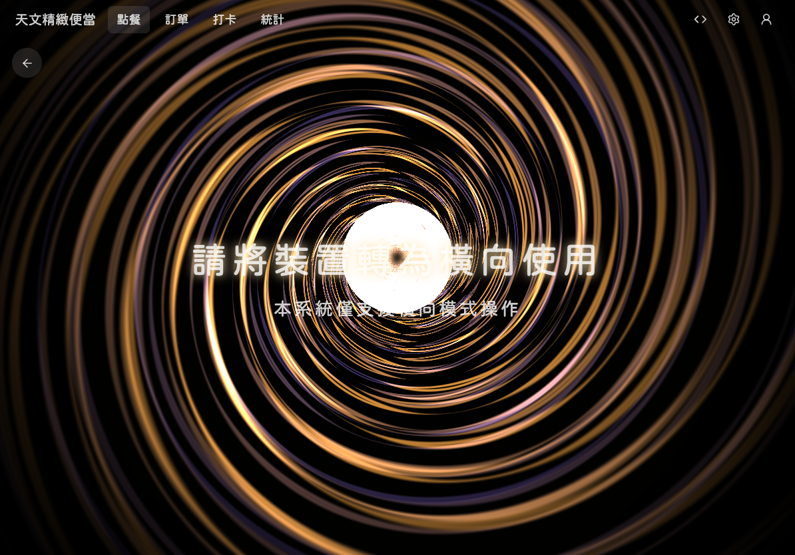
天文 V2 僅支援直向模式，這是為了確保點餐介面的最佳使用體驗。
如果以上方法都無法解決您的問題，請聯繫管理員，並提供以下資訊：